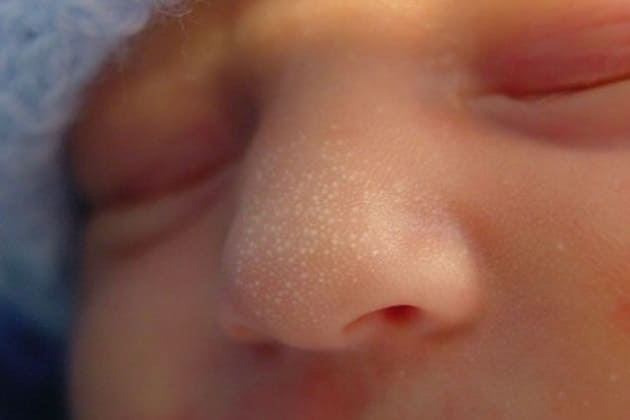
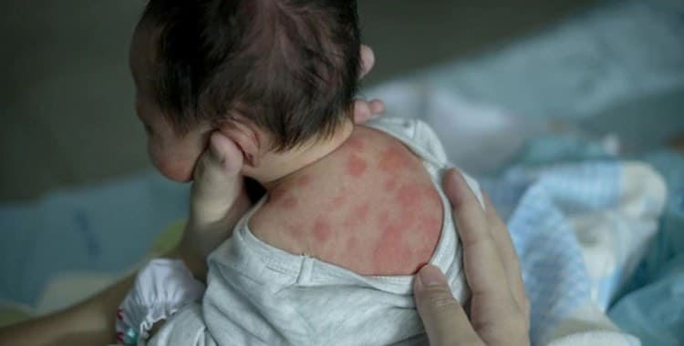
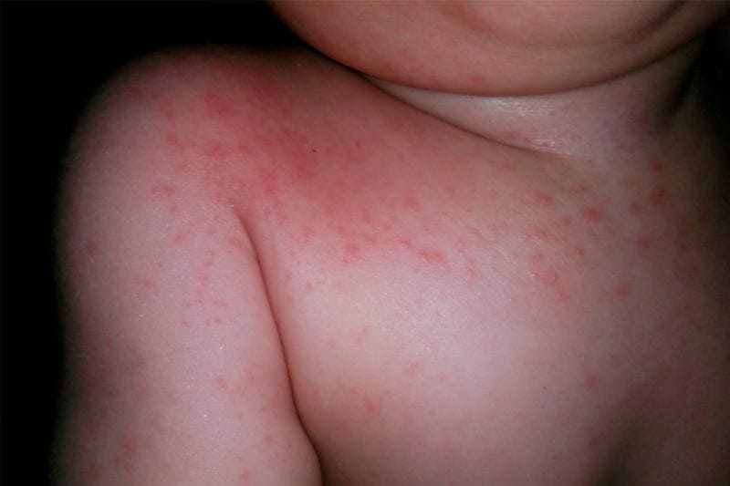
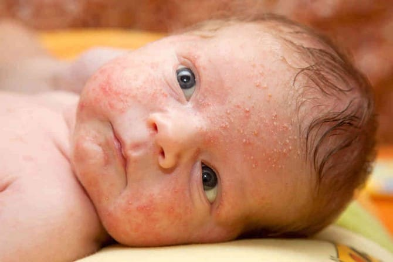
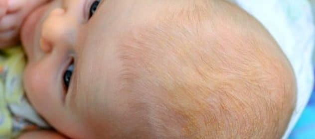
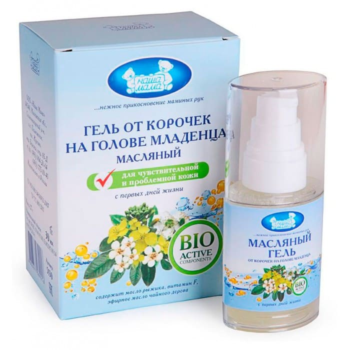

Милиум (белые угри). В первые недели жизни ребенка вы можете увидеть и нащупать крошечные белые угри, рассыпанные по лицу ребенка, особенно на носу. Вызванные закупоркой пор секретами, эти угри являются нормальным явлением и исчезают через несколько недель безо всякого лечения.

Токсическая эритема. Пусть вас не пугает столь тревожное название. Появляются точки в виде желтовато-белых прыщиков, окруженных кружком покрасневшей кожи. Выглядят как укусы. Эти совершенно нормальные точки появляются на первой неделе, чаще всего на животике ребенка, и исчезают без лечения к двум неделям.

Потница. Представляющая собой красноватые папулезные (в виде прыщиков) высыпания, потница появляется на чрезмерно влажных участках кожи, например между шейными складками, за ушами, в паху или на участках, где одежда прилегает слишком плотно. Осторожно проведите пальцами по сыпи, и вы поймете, почему эту сыпь называют колючей. На ощупь она шершавая, как наждачная бумага. Мне представляется, что потница может причинять ребенку беспокойство. Чтобы избавиться от нее, одевайте своего ребенка в легкую просторную одежду из хлопка и аккуратно промывайте кожу простой прохладной водой или раствором пищевой соды (одна чайная ложка на стакан воды). Помните, что нужно промокнуть, смыть и просушить; не скребите и не трите чувствительную кожу новорожденного.

Акне новорожденных. Примерно на третьей или четвертой неделе будьте готовы к тому, что на идеально гладком личике вашего младенца покажутся первые дефекты кожи. Подобно подростковому акне, высыпание в виде красных, маслянистых прыщей покрывает большую часть лица ребенка, и прежде мягкие, гладкие щечки становятся шершавыми, как наждак. Отложите на время фотоаппарат; этот первый переходный период кратковременный (все, кто уже сталкивался с этим явлением, планируют первые фотографии ребенка и крестины до или после периода акне). Акне новорожденных обычно достигает своего пика примерно на третьей неделе и проходит к месяцу или шестинедельному возрасту.

В ситуации, сходной с гормональными изменениями пубертатного периода, повышение гормонального уровня во время родов может вызвать чрезмерную выработку воскоподобного маслянистого вещества, секрета сальных желез, называемого кожным салом, особенно на лице и голове. Закупорка кожных желез ведет к их воспалению и образованию угрей. В медицине это называется себорейным дерматитом.
Акне новорожденных беспокоит родителей больше, чем ребенка. Коротко подстригите ногти ребенка, чтобы он не поцарапал себе лицо. Осторожное промывание водой с мягким мылом удалит лишнее и иногда вызывающее раздражение сало. Если папулы (угри) воспаляются (около них появляются красные участки или из них сочатся медоподобные выделения), ваш врач может прописать антибактериальную мазь. У большинства новорожденных акне полностью исчезает без какого бы то ни было особого ухода за кожей.
Если это явление возникает очень рано (то есть на второй неделе) и/или состояние быстро ухудшается: раздражение перекидывается с лица на волосы и вниз на шею и даже плечи, – возможно, вы наблюдаете один из первых признаков аллергии на какое-то вещество в смеси, которой кормите ребенка, или в вашем грудном молоке. Именно это имело место у нашего седьмого ребенка, Стефана, и высыпания мгновенно исчезли, когда из рациона Марты были полностью исключены продукты из коровьего молока.
Корочки на голове. При другой форме себорейного дерматита вы заметите и нащупаете на коже головы ребенка высыпания в виде напоминающих корочки маслянистых бляшек, особенно над родничком. В легком случае шелушащаяся сухая кожа головы похожа на перхоть. Редко требуется какое-либо иное лечение, кроме аккуратного мытья и повышения влажности. Мойте кожу головы мягким шампунем не чаще одного раза в неделю. Слишком энергичное и слишком частое мытье головы лишь пересушит кожу и только ухудшит состояние.

Вот как быть при более тяжелой форме себорейного дерматита:
• Вотрите в покрытые корочками участки растительное масло холодного прессования, чтобы размягчить их. Дайте маслу около пятнадцати минут на то, чтобы впитаться.
• Мягкой зубной щеткой осторожно вычешите корочки.
• Смойте лишнее масло мягким детским шампунем.

Если дерматит не проходит, осложняется и вызывает зуд, попробуйте специальную мазь и мягкий шампунь с дегтем. Вы можете также заметить маслянистые корочки за ушами своего ребенка и в кожных складках на шее. Этот себорейный дерматит обычно проходит при осторожном мытье теплой водой, но иногда требуется мазь, изготовляемая по рецепту. Коже полезна влажность. Вот почему большинство кожных высыпаний усиливается в зимние месяцы, когда центральное отопление пересушивает воздух. Испаритель, или увлажнитель, поставленный в комнату, где спит ваш ребенок, увлажнит сухую кожу.
Марта, Уильям, Роберт, Джеймс Сирс"Ваш малыш от рождения до двух лет"